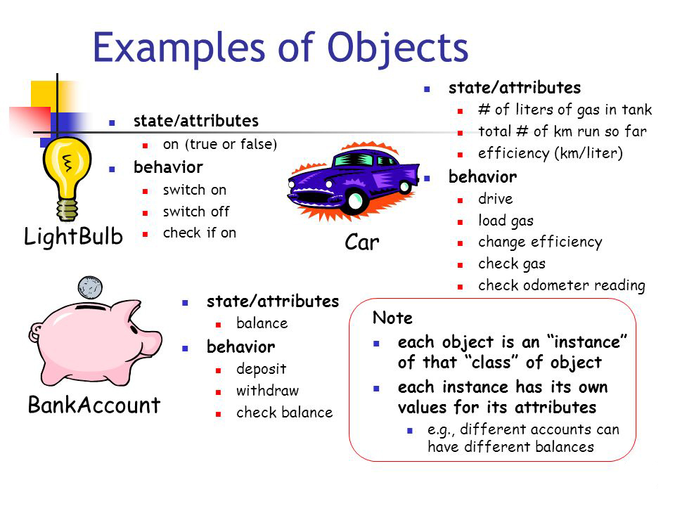

Python Intermediate: Object Oriented Programming
Classes and object oriented programming

Written, designed, and produced by:
Software Training for Students
About Software Training for Students
Software Training for Students is an organization on campus that provides free software training to all students and faculty. Our services include custom workshops, open-enrollment classes, one-on-one project help, and access to Lynda.com. For more information on the Software Training for Students (STS) program, visit our website at wisc.edu/sts.
STS is part of the Division of Information Technology (DoIT) - Academic Technology at UW-Madison. For more information regarding DoIT Academic Technology, visit at.doit.wisc.edu.
Introduction
Welcome to the second Python course! This course is designed to help teach Object Oriented Programming
and its corresponding syntax in Python.
This course assumes you have a basic understanding of procedural programming in Python
as taught in the preceding course.
Learning Outcomes
By the end of this course, you should be able to:
- Describe what a class is and its purpose in programming.
- Understand the is-a vs has-a relationship types.
- Understand encapsulation and inheritance.
- Describe the meaning of polymorphism and why it's useful.
- Use Object Oriented Programming to more efficiently accomplish programming tasks.
- Install external Python modules.
- Create your own Python modules.
What is Object Oriented Programming?
Object Oriented Programming is a very useful construct and its immense popularity follows as a result.
An understanding of OOP is indispensable in today's programming scene.
Object oriented programming can be very similar in implementation to procedural programming,
but as we will see, it comes with new syntax adding a layer of abstraction and improving compartmentalization.
Grouping data and methods.
Procedural Programming
Discussed in the previous course, procedural programming is a very simple and effective
method of writing code. However, there are limitations to its capabilities.
Let's say you have a ball and you want to keep track of its x, y, and z locations.
Using strictly procedural programming and the existing simple data types, you would have
to write something like this:
While the above example might not be that terrible, in a real program, the ball may have an image associated with it,
as well as a width, height, depth, velocity, acceleration, jerk, mass, the original x, y, and z
locations, and even more.
Objects
Seeing how messy strictly procedural programming can get, this is where Object Oriented Programming shines.
With OOP, you can group variables and functions together into a "blueprint" or "skeleton"-like structure which you can then
build "objects" from. Essentially, you're creating a data type that has multiple "member variables" or "fields" with each instance this type having
its own unique values.

Structures
One thing that Python lets us do is group variables together into a single structure, which is
very helpful when it comes to organization. This is called a "class".
#Creating a Ball class
class Ball:
#Ball attributes
x = 0
y = 0
z = 0
#Creating a new instance of a Ball
#Similar looking to a function call
ball = Ball()
print("The ball's position: x=%d, y=%d, z=%d" % (ball.x, ball.y, ball.z))
Perhaps you want to be able to choose where the ball starts. To do so, we need to add a
"constructor". A constructor is a function within a class that is run whenever a new
instance of that class is created. In python the syntax might look a bit cryptic,
but its really just like any other function, just with a strange name. It takes the parameter
"self", which can be any name that you want, but it is conventionally "self" to avoid
confusion. The "self" parameter is a reference to the ball object that is being created,
thus the name "self".
#Creating a Ball class
class Ball:
#Ball attributes
x = 0
y = 0
z = 0
#Ball constructor. Runs every time a new ball is created
def __init__(self, x, y, z):
self.x = x
self.y = y
self.z = z
#Creating a new instance of a Ball
#Similar looking to a function call
ball = Ball(20, 30, 40)
print("The ball's position: x=%d, y=%d, z=%d" % (ball.x, ball.y, ball.z))
A default argument is an argument that has a default value
if no value is specified.
It is worth noting that when you create a ball object, you only need to pass the parameters after "self".
This is because "self" is automatically passed by the interpreter when you use the ball.x (instance.field) syntax. In other programming languages,
"self" is often written as "this" and is an implicit (read hidden) parameter, but in Python,
the parameter is explicit and must be in every method's (a function within a class) declaration.
Like every function in Python, constructors can have default arguments.
This is Python's version of "function overloading" (a common feature in other languages).
You can use this to specify default values for parameters so that the user need only override what they
want to change.
Classes
Up until now, we've been using objects entirely as structures (containers for variables),
but we can also have our objects contain functions which are called, "methods". Methods,
like constructors, also take the "self" parameter which is used in much the same way.
from math import sqrt
#Creating a ball class
class Ball:
x = 0
y = 0
z = 0
#Ball constructor
def __init__(self, x, y, z):
self.x = x
self.y = y
self.z = z
#Ball method
def move(self):
self.x += 1
self.y += 1
self.z += 1
#Create a new instance of Ball
ball = Ball(0, 0, 0)
#Loop 32 times
for i in range(32):
#Format string for easy printing.
print("Ball Position: x=%d, y=%d, z=%d" % (ball.x, ball.y, ball.z))
#A single function call instead of three
ball.move()
#Print the distance from the start position
#Uses the Pythagorean theorem
print("\nThe ball ended up %d meters away from where it started." % sqrt(ball.x**2 + ball.y**2 + ball.z**2))
While this may not look much neater than its original counterpart, once you start using multiple objects
there is a significant difference in both readability and succinctness as you can see in the below example.
Encapsulation vs Inheritance
When creating objects, there are two main ways to organize the code amongst them.
One method is known as "Encapsulation", the other, "Inheritance". We'll first go into encapsulation, then
take a look at inheritance.
Keyword arguments are arguments that are explicitly referenced when the function is called such as in the
moveBall(x = 50) example.
Encapsulation
When creating objects, we can put variables inside of them called, "fields".
You may be wondering if we can put objects inside of our objects, and the answer is yes.
This concept is called encapsulation.
Inheritance
Now that we've seen encapsulation, it's time to take a look at inheritance. With inheritance, we can
use the methods and fields of a "parent" class within a "child" class that inherits from it.
Imagine you have a "Vehicle" class which perhaps has some fields like "position" and "speed". With inheritance,
we can create a "Bicycle" class which inherits from "Vehicle" and consequently, does not need to define those
fields, but instead only the fields specific to a bicycle.

In Python, inheritance can be achieved by putting the name of the class you want your subclass
to inherit from in parenthesis after the declaration of the subclass much like defining parameters of a function.
Here is a simple example using inheritance.
"Is a" vs "Has a" relationship.
Now that we've talked about both encapsulation and inheritance, it is important to make the distinction
between the "Is a" vs the "Has a" relationship. The "Is a" relationship is used when a class derives from a
superclass, while the "Has a" relationship pertains to encapsulation.
When deciding whether to use encapsulation or inheritance, ask yourself whether the object "Is"
or "Has" another object. For example: a bicycle is a vehicle, but it has a seat.
Polymorphism
Polymorphism is a helpful trait of object oriented programming in Python. Essentially, polymorphism is the
ability to call methods specific to each class that is being referred to while not having to change your code.
Method Overriding
As we learned, when a class inherits from another class, it gains all of the methods and fields of the class that it inherited
from. However, there may be scenarios in which you may want to change some of the parent's functionality
in the child class. This can be accomplished through a process called method overriding.
Overriding is achieved by naming the child class' method the same as the parent class'. When this occurs,
the interpreter uses the child's implementation of the method, and ignores the parent's.
#Create parent class Ball
class Ball:
#Old roll method
def roll(self):
print("Ball's roll")
#Create a child class
class BowlingBall(Ball):
#Override the old roll method
def roll(self):
print("Bowling ball's roll")
#Create a new instance of a bowling ball
ball = BowlingBall()
#Call the bowling ball's roll method
ball.roll()
Often there are times where you want to override a method, but still be able to use the parent's method.
There are a few ways to accomplish this. One way is to use Python's super() proxy object
which returns a reference to the parent class with respect to the current object that we can then use to call the
parent class' methods. The other is to directly specify the name of the class
that you want to call the method of, followed by the method name and passing it a reference to the current instance
that you want the operations performed on.
Essentially, if you want to call the parent classes method in your child method you can do
super().parentMethod(),
Or you can explicitly call ParentClass.parentMethod(self)
Polymorphic Functions
Let's suppose you have a function which takes an instance of a class containing a "roll" method.
In Python, we can simply call the "roll" method on whatever is passed into the function, and if it has a
"roll" method, the method will be called, otherwise and exception will be thrown.
#Create parent class Ball
class Ball:
#Old roll method
def roll(self):
print("Ball's roll")
#Create a child class
class BowlingBall(Ball):
#Override the old roll method
def roll(self):
print("Bowling ball's roll")
def rollIt(rollable):
rollable.roll()
#Create a new instance of a bowling ball
bBall = BowlingBall()
#Create a new instance of a ball
ball = Ball()
#Call rollIt with each rollable object
rollIt(bBall)
rollIt(ball)
While this is a very useful technique, it can cause problems as soon as we pass it something that does
not have a roll method. In that case, it will throw an exception. If we wanted to check for that case programmatically,
Python has a function called hasattr(object, name) which we can use to check if an object
has the method that we are trying to call before we try to call it.
Modules
Modules are the Python version of "libraries" which are, essentially, files containing code that you
or someone else wrote that can be used within other Python programs.
Creating Your Own Modules
When it comes to creating your own modules in Python, it's actually quite simple. Simply create a
Python file (*.py) and refer to it from another file based on its relative directory.
For instance, if you've created a file named Toys.py containing a class
Ball with a method moveBall, and this file is
located in a subdirectory named lib, there are several ways you could link
this file to your program. Below are some examples.
#Imports the Toys module from the lib directory
from lib import Toys
ball = Toys.Ball()
#imports the Ball class from lib.Toys
from lib.Toys import Ball
ball = Ball()
#Imports everything from lib.Toys
from lib.Toys import *
ball = Ball()
If your module is in the current directory of the program that you're running, you need only
import [module_name]
Below is an example of module usage:
PIP
PIP is a great resource for installing Python libraries, and if you're running Python 2 >= 2.7.9 or
Python 3 >= 3.4, it comes pre-installed.
To use PIP, simply open the command prompt and type pip install [name of library]
PIP will automatically try to find the library that you typed and install it so that you jump right in and use it immediately.
Conclusion
You did it! You reached the end of the second Python manual. Give yourself a pat on the back, you deserve it.
You should now know how to use Object Oriented Programming in your code as well as creating and installing modules to
enhance your coding experience.
If you have any questions, feel free to check out the Python help page at https://www.python.org/about/help/
or the Lynda.com page at https://www.lynda.com/Python-training-tutorials/415-0.html.
If you have any further questions, STS has free one-on-one consultation services available for any problems you might encounter.
Here is a simple example of a hangman game that uses the concepts we learned today. Why not play around with it and see how you could make it better?